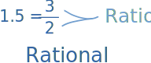
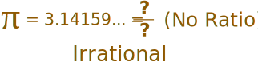
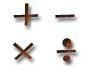

Rational Numbers
A Rational Number can be made by dividing an integer by an integer.
(An integer itself has no fractional part.)
Example:
1.5 is a rational number because 1.5 = 3/2 (3 and 2 are both integers)

Most numbers we use in everyday life are Rational Numbers.
You can make a few rational numbers yourself using the sliders below:
Here are some more examples:
| Number | As a Fraction | Rational? |
|---|---|---|
| 5 | 5/1 | Yes |
| 1.75 | 7/4 | Yes |
| 1000 | 1000/1 | Yes |
| .001 | 1/1000 | Yes |
| −0.1 | −1/10 | Yes |
| 0.111... | 1/9 | Yes |
| √2 (square root of 2) |
? | NO ! |
Oops! The square root of 2 cannot be written as a simple fraction! And there are many more such numbers, and because they are not rational they are called Irrational.
Another famous irrational number is Pi (π):

Formal Definition of Rational Number
More formally we say:
A rational number is a number that can be in the form p/q
where p and q are integers and q is not equal to zero.
So, a rational number can be:
where q is not zero.
Examples:
| p | q | p / q | = |
|---|---|---|---|
| 1 | 1 | 1/1 | 1 |
| 1 | 2 | 1/2 | 0.5 |
| 55 | 100 | 55/100 | 0.55 |
| 1 | 1000 | 1/1000 | 0.001 |
| 253 | 10 | 253/10 | 25.3 |
| 7 | 0 | 7/0 | No! "q" can't be zero! |
Just remember: q can't be zero.
Using Rational Numbers
|  |
If a rational number is still in the form "p/q" it can be a little difficult to use, so I have a special page on how to: |
Fun Facts ....
The ancient greek mathematician Pythagoras believed that all numbers were rational, but one of his students Hippasus proved (using geometry, it is thought) that you could not write the square root of 2 as a fraction, and so it was irrational.
But followers of Pythagoras could not accept the existence of irrational numbers, and it is said that Hippasus was drowned at sea as a punishment from the gods!